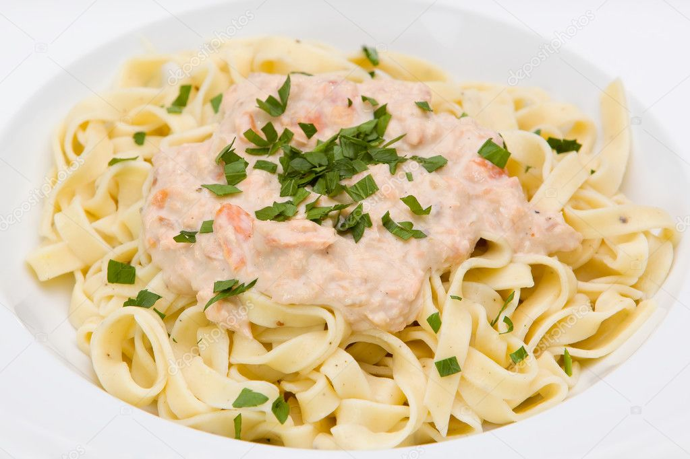

Salmon Pasta

PREP TIME 5 min
BAKE TIME 10-12 min
SERVINGS 3-4 servings
INGREDIENTS
240g wholewheat fusilli
knob of butter
1 large shallot, finely chopped
140g frozen peas
2 skinless salmon fillets, cut into chunks
140g low-fat crème fraîche
½ low-salt vegetable stock cube
small bunch of chives, snipped
INSTRUCTIONS
STEP 1
Bring a pan of water to the boil and cook the fusilli according to the pack instructions.
STEP 2
Meanwhile, heat a knob of butter in a saucepan, then add the shallot and cook for 5 mins or until softened.
STEP 3
Add the peas, salmon, crème fraîche and 50ml water. Crumble in the stock cube.
STEP 4
Cook for 3-4 mins until cooked through, stir in the chives and some black pepper. Then stir through to coat the pasta. Serve in bowls.